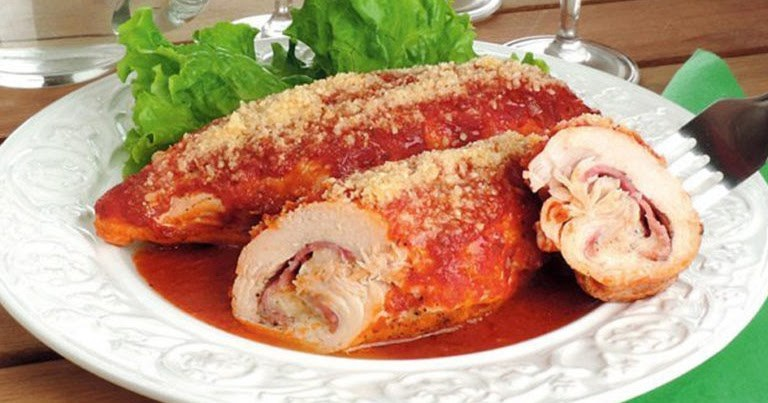

Aves · Frango
Enrolados de frango

Ingredientes
- 2 peitos de frango (cerca de 1 kg no total)
- Sal e pimenta-do-reino a gosto
- 1¼ xícara de água
- ¼ xícara de arroz cru
- 1 colher (sopa) de cebolinha verde picada
- 1 cenoura descascada e ralada
- 1 pimentão verde cortado em quadradinhos
- 1 colher (chá) de casca ralada de laranja
- Manteiga para pincelar
- 1 xícara de suco de laranja
- 1 colher (sopa) de maisena
- 1 pitada de sal
Modo de preparo
- Retire a pele e os ossos dos peitos de frango e divida os filés ao meio para obter 4 pedaços.
- Sobre uma tábua, bata os filés com um martelo de carne até ficarem bem finos. Tempere com sal e pimenta e reserve.
- Numa panela, misture a água com o arroz cru, a cebolinha, a cenoura, o pimentão e a casca de laranja. Tempere com sal e pimenta. Tampe e cozinhe em fogo baixo por cerca de 20 minutos, até o arroz ficar macio e absorver todo o líquido.
- Espalhe o arroz sobre os filés, enrole cada um em cilindro e prenda com palitos.
- Arrume os enrolados lado a lado numa assadeira. Pincele um pouco de manteiga, tampe com papel-alumínio e asse em forno médio (180 °C) por cerca de 20 minutos, até ficarem macios. Deixe esfriar e congele.
- Numa panela, misture o suco de laranja com a maisena e uma pitada de sal. Cozinha mexendo sempre até formar um creme grosso. Deixe esfriar e congele à parte.
Observação
Antes de embrulhar, embeba os pedaços no molho para não ressecarem. Congelamento: congele os enrolados no tabuleiro descoberto; transfira para saco plástico. O molho de laranja vai em recipiente rígido, depois em saco plástico. Descongelamento: descongele os enrolados na geladeira; aqueça o molho em fogo baixo; aqueça os enrolados no forno cobertos com papel-alumínio, despeje o molho e sirva.